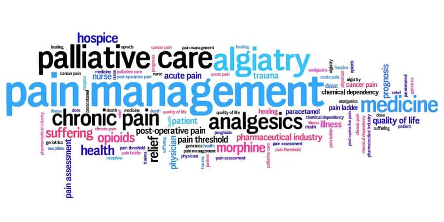
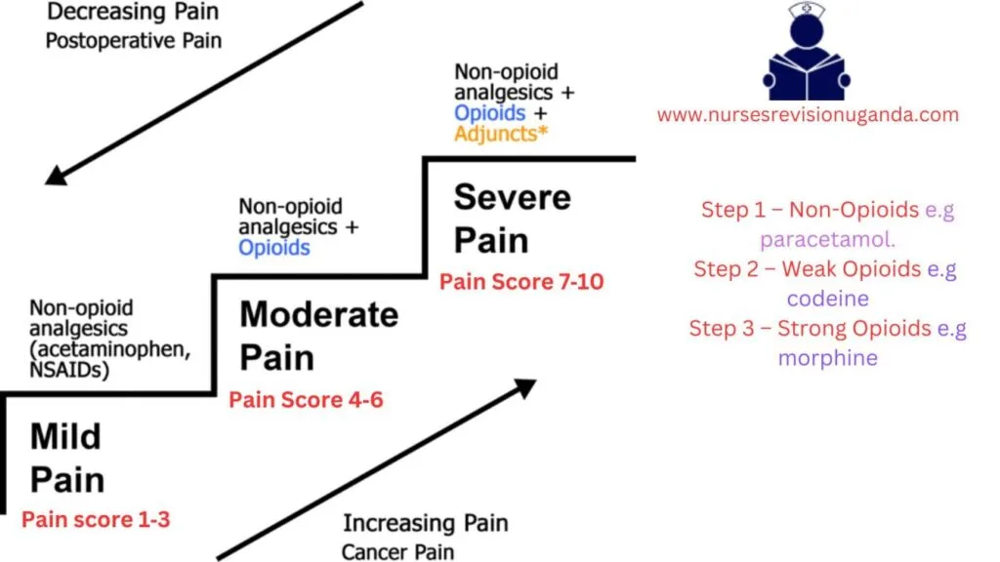

Expanded Nursing Uganda Explanation
Pain Management should be understood beyond a short definition. Link the concept to patient history, focused assessment, common risks, nursing priorities, documentation and evaluation of outcomes.
Contents — 13 sections (tap to expand)
01 Pain Management in Palliative Care
The WHO states that freedom from cancer pain and pain caused by other diseases like HIV/AIDS should be a Basic Human Right. Pain is managed after Assessment, therefore understand Assessment of Pain by clicking here.
02 Principa l of effective pain management
The WHO set out some basic principles for pain management: :
- Principle Description
- By the mouth Always give treatment orally when possible.
- By the clock Persistent pain requires regular round the clock dosages (i.e. 4 hourly oral morphine). Give analgesics at regular intervals. Give the net dose of analgesia before the previous one has worn off Titrate the dose against pain.
- By the ladder Use the WHO analgesic ladder as a guide to management, you can move stepwise up or down the ladder.
- By the patient Dosage is determined on an individual basis as no two patients are the same. The choice of drug for managing pain should be appropriate for the type and severity of pain and a combination of medication should be used as appropriate.
- Attention to Detail/Adjuvants Regular laxatives are needed in all patients who receive opiates except those suffering from persistent diarrhea. Antiemetics are usually required with initial morphine use in African patients. Not all pain responds to opiates and the ladder. Opiate semi-responsive: Bone pain-NSAID+/- opiates; Nerve compression-steroid; Increased edema-ICP-steroid; Inflammation-steroid. Opiate resistant: Muscle pain/spasm-muscle relaxant; Neuropathic pain-tricyclic antidepressants e.g. amitriptyline and anticonvulsants.
03 Types of Pain Management
Non-pharmacological Pain Management
- Physical : Includes methods like massage, exercise, physiotherapy, and surgery.
- Psychological : Involves strengthening the patient’s coping mechanisms through counseling and relaxation therapies.
- Social : Assists the patient in resolving social or cultural problems through community resources, financial and legal support, etc.
- Spiritual : Includes religious counseling and prayer.
Pharmacological Pain Management
- Nociceptive Pain (normal) Management: Follow WHO guidelines.
- Utilize the oral route whenever possible.
- Administer analgesia at fixed time intervals, giving the next dose before pain recurs.
- Involve adults and children fully in their care and link doses to their daily routine.
- Choose analgesics based on the WHO analgesic ladder , which covers mild, moderate, and severe pain.
04 **WHO Analgesic Ladder**
The World Health Organization (WHO) created an analgesic ladder as a method for effectively managing pain in cancer patients (WHO, 1996).
The ladder consists of three steps.
- If a particular drug becomes ineffective, a stronger drug should be prescribed, and the treatment should progress to the next step on the ladder.
- The management of pain should follow a step-wise approach, moving both upward and downward on the ladder as necessary.
The WHO Analgesic Ladder has proven successful in providing pain relief to approximately 90% of cancer patients.
Step 1: Mild Pain (Non-Opioids)
- Paracetamol : Adult dose: 500mg-1g orally every 6 hours, with a maximum daily dose of 4g.
- Can be combined with a non-steroidal anti-inflammatory drug (NSAID).
- Ibuprofen (NSAID): Adult dose: 400mg orally every 6-8 hours, with a maximum daily dose of 1.2g.
- Give with food and avoid in asthmatic patients.
- Effective for bone and soft tissue pains.
Step 2: Moderate Pain (Weak opioids)
- Codeine : Adult dose: 30-60mg orally every 4 hours, with a maximum daily dose of 180-240mg.
- Often combined with Step 1 analgesics.
- Laxatives should be given to prevent constipation, unless the patient has diarrhea.
- Tramadol : Adult dose: 50-100mg orally every 4-6 hours.
- Start with a small dose and increase if needed, with a maximum daily dose of 400mg.
- Use with caution in epileptic cases.
Step 3: Severe Pain (Strong analgesics)
- Morphine : Considered the “gold standard” of opioid analgesics.
- No maximum dose; the right dose is the one that provides pain relief without side effects. (In Uganda 30mg /24hrs is most common dose)
- Starting dose varies based on factors such as age and previous use of opioids.
- Starting dose: 5—10mg orally 4hrly depending on age, previous use of opiates, etc.
- Gradually increase the dose as needed.
- Frail/elderly patients may start with a lower dose( 2.5mg orally 6—8hrly,) due to impaired renal function.
05 MORPHINE
Morphine is a commonly used analgesic medication available in liquid form. It comes in different strengths, including weak (green) with a concentration of 5mg/5ml, strong (red) with a concentration of 50mg/5ml, and very strong (blue) with a concentration of 100mg/5ml. Liquid morphine is widely accessible and used for pain management purposes.
- Morphine exerts its action by binding to opioid receptors in the brain and spinal cord, resulting in pain relief. (Morphine binds to both mu and kappa receptor sites, resulting in profound analgesia.)
- It acts on the spinal cord to modify the transmission of pain signals and activates inhibitory pathways from the brain stem and basal ganglia.
- Morphine also affects the limbic system and higher brain centers, influencing the emotional response to pain.
- Additionally, its effects on the gastrointestinal and respiratory systems are partly mediated by the autonomic nervous system and direct interaction with opioid receptors in peripheral tissues.
- Primarily indicated for moderate to severe pain
- It is also employed in the treatment of acute myocardial infarction (heart attack) to alleviate chest pain and reduce anxiety.
- It is used for the symptomatic relief of severe acute and chronic pain when nonnarcotic analgesics have proven ineffective.
- Morphine is administered as preanesthetic medication.
- It helps relieve shortness of breath associated with heart failure and pulmonary edema.
- Morphine is employed for the management of acute chest pain associated with myocardial infarction (MI).
- Morphine can be utilized to treat symptoms such as diarrhea, cough, and dyspnea.
- Constipation : Laxatives should be administered alongside morphine, unless the individual has diarrhea. For example, Bisacodyl 5mg at night, increasing the dose to 15mg if necessary.
- Nausea and Vomiting : If these symptoms occur, anti-emetics can be given. For instance, Plasil 10mg every 8 hours or Haloperidol 0.5mg once a day.
- Drowsiness : Some individuals may experience drowsiness during the initial days of morphine treatment. If drowsiness persists beyond three days, reducing the morphine dose is recommended.
- Itching : Although uncommon, itching may occur as a side effect of morphine. In such cases, reducing the morphine dose can help alleviate the itching sensation.
- Acute or Severe Asthma: Morphine should be avoided in patients with acute or severe asthma due to the potential risk of exacerbating respiratory symptoms.
- Gallbladder Disease: Morphine may intensify or mask the pain associated with gallbladder disease, specifically due to biliary tract spasms. Caution should be exercised when considering morphine use in these cases.
- Gastrointestinal (GI) Obstruction: Morphine should be avoided in patients with known or suspected GI obstruction as it may worsen the condition or lead to complications.
- Severe Hepatic Impairment: Morphine should be used with caution in patients with severe hepatic impairment, as the metabolism and elimination of the drug may be altered.
- Severe Renal Impairment: Morphine should be used with caution in patients with severe renal impairment, as clearance of the drug may be reduced, potentially leading to drug accumulation and increased risk of adverse effects.
- Caution : Elderly patients and those who are debilitated or cachectic should be initially treated with reduced doses of morphine.
- Dysphoria: Morphine can lead to feelings of restlessness, depression, and anxiety.
- Hallucinations: Some individuals may experience hallucinations while taking morphine.
- Nausea: Morphine can cause nausea.
- Constipation: One of the common side effects of morphine is constipation.
- Dizziness: Morphine may cause dizziness.
- Itching: Some individuals may experience an itching sensation.
- Overdose: Taking an excessive amount of morphine can result in severe respiratory depression or cardiac arrest.
- Tolerance: Tolerance can develop to the sedative, nausea-producing, and euphoric effects of morphine.
- CNS Depressants: Concurrent use of morphine with other central nervous system (CNS) depressants, such as alcohol, other opioids, general anesthetics, sedatives, and certain antidepressants (e.g., monoamine oxidase inhibitors and tricyclics), can potentiate the effects of opiates. This increases the risk of severe respiratory depression and the potential for life-threatening complications.
- Monoamine Oxidase (MAO) Inhibitors: Combining morphine with MAO inhibitors, a type of antidepressant medication, can lead to increased opioid effects and the risk of serotonin syndrome. Serotonin syndrome is a potentially life-threatening condition characterized by symptoms such as agitation, hallucinations, rapid heartbeat, elevated body temperature, and changes in blood pressure.
- Tricyclic Antidepressants: Concurrent use of morphine with tricyclic antidepressants can enhance the analgesic effects of morphine but also increase the risk of adverse effects, such as sedation and respiratory depression.
- When morphine is administered as an epidural drug, patients must be closely monitored in a fully equipped and staffed environment for at least 24 hours due to the risk of adverse effects.
- Extended-release tablets of morphine have a potential for abuse similar to other opioid analgesics.
- Morphine is classified as a Schedule II controlled substance and should be used strictly according to dispensing instructions. Tablets or capsules should be taken whole and should not be broken, chewed, dissolved, or crushed.
- Alcohol consumption should be avoided when taking morphine products.
- Failure to adhere to these warnings could result in fatal respiratory depression.
- Date 25/3/2014
- Patient Baluku John
- IP No 123/14
- Age 68 years
- Sex Male
- Diagnosis Ca penis
- Medication Liquid morphine 5mg in 5ml
- Instructions Take 5ml every 4 hours and 10ml at night
- Supply 250ml
- Signature …………………………..
- Naloxone Administration: Naloxone is an opioid receptor antagonist that can reverse the effects of morphine overdose. It is typically administered intravenously (IV) and acts quickly to restore normal respiration and consciousness. Multiple doses of naloxone may be required depending on the severity of the overdose.
- Activated Charcoal: Activated charcoal may be given orally or through a nasogastric tube to help prevent further absorption of morphine from the gastrointestinal tract. It works by binding to the drug and reducing its availability for systemic circulation.
- Laxative: A laxative may be administered to promote bowel movement and eliminate the morphine from the digestive system. This helps to reduce the absorption of the drug and enhance its elimination.
- Narcotic Antagonist: Along with naloxone, other narcotic antagonists such as naltrexone may be used to counteract the effects of morphine overdose. These medications compete with morphine for opioid receptors and can help reverse respiratory depression and other opioid-related symptoms.
Actions and Uses of Naloxone
- Naloxone is a pure opioid antagonist
- Blocks both mu and kappa receptors I.
Used for:
- Reversal of opioid effects in emergency situations of suspected opioid overdose
- Postoperative opioid depression treatment
- Adjunctive therapy to reverse hypotension caused by septic shock
II. Administration Alerts
- Administer for a respiratory rate of fewer than 10 breaths/minute
- Keep resuscitative equipment accessible
- Pregnancy category B
III. Adverse Effects of Naloxone
- Minimal toxicity
- Reversal of opioid effects may result in: 1. Rapid loss of analgesia 2. Increased blood pressure 3. Tremors 4. Hyperventilation 5. Nausea and vomiting 6. Drowsiness
IV. Contraindications
- Naloxone should not be used for respiratory depression caused by nonopioid medications
06 About Dependence
I. Opioid Dependence
Dependence refers to the state where a patient feels that they cannot function without the drug.
- Psychological dependence (addiction): Involves experiencing cravings and engaging in compulsive drug-seeking behavior.
- Physiological dependence: If the drug is abruptly discontinued, patients may develop withdrawal symptoms.
- The likelihood of physiological dependence is reduced due to the use of low doses and the shorter lifespan of cancer patients.
- Therapeutic dependence: Occurs when the underlying cause of pain is not resolved, leading to ongoing reliance on morphine.
- If the cause of pain is resolved, the dosage of morphine needs to be adjusted accordingly.
- Opioids have a high risk for dependence
- Tolerance develops quickly, leading to escalated doses and increased frequency of drug use
- Physical dependence occurs with higher and more frequent doses
- Discontinuation of drug use leads to uncomfortable withdrawal symptoms
- Psychological dependence and intense craving may persist even after overcoming physical dependence
- Support groups are important to prevent relapse
II. Treatment Options for Opioid Dependence
Methadone Maintenance
- Switching from illegal IV and inhalation drugs to oral methadone
- Methadone does not cause euphoria and allows patients to function normally
- Methadone maintenance requires continued drug use to avoid withdrawal symptoms
- Provides physical, emotional, and legal benefits compared to illegal drug use
Buprenorphine Therapy
- Administered sublingually or transdermally
- Used early in opioid abuse therapy to prevent withdrawal symptoms
- Suboxone (buprenorphine and naloxone) used for maintenance of opioid addiction
07 Adjuvant Medication
Adjuvant medications are drugs that are typically used for other purposes but can be effective in relieving pain under certain circumstances. They can be used alone or in combination with other medications on the analgesic ladder. Adjuvant medication plays a crucial role in pain management, especially for non-opioid responsive pain.
Examples of adjuvant medications include:
- Antidepressants (e.g., Amitriptyline): Used to treat pain caused by nerve damage.
- Cancer pain may require the addition of opioids as well.
- Full benefits may take several weeks to achieve, although some effects may be noticed within one week.
- Commonly used antidepressants are Amitriptyline (12.5-50mg at night) and Imipramine (10-50mg at night).
- Given at night to potentially aid in sleep.
- Side effects may include drowsiness, dry mouth, and urinary retention.
- Anticonvulsants (e.g., Phenytoin, Carbamazepine): Used to treat neuropathic pain.
- Can be used as an alternative or in combination with antidepressants or opioids.
- Mechanism of action involves blocking sodium channels and enhancing GABA-mediated synaptic inhibition.
- Examples of anticonvulsants include Phenytoin, Sodium valproate, Clonazepam, and Gabapentin.
- Corticosteroids (e.g., Dexamethasone): Have various uses in palliative care.
- Useful for pain caused by tumor pressure and inflammation.
- Best used as a short-term measure due to potential side effects with long-term use.
- Indicated for conditions such as nerve compression, superior vena caval obstruction, raised intracranial pressure (headache), and bone pain.
- Side effects may include gastric irritation, oral candidiasis, fluid retention (ankle edema), proximal myopathy, steroid-induced diabetes mellitus, and psychosis.
- Smooth Muscle Relaxants (e.g., Buscopan, Diazepam): Used for specific types of pain, such as biliary colic, bowel obstruction, ureteric colic, contractures, or spastic paraparesis.
- Examples include Hyoscine butylbromide (Buscopan), Oxybutynin, Diazepam, and Clonazepam.
- Side effects may include drowsiness.
Other interventions in pain management
- Antibiotics for fungating wounds
- Use of frangipani petals for post-herpetic neuralgia (neuropathic pain)
- Capsaicin cream for neuropathic pain
- Massage therapy, and reflexology.
08 Myths surrounding the use of opioids:
Morphine is offered to patients only when death is imminent:
- The degree of pain, not the stage of a life-threatening illness, determines the need for medication.
- Morphine is prescribed based on pain levels, and some patients may require it for an extended period.
- Patients can lead active lives while managing pain with morphine.
Healthcare providers do an adequate job of providing pain control:
- Barriers exist for healthcare providers in achieving optimal pain control.
- Doctors may overlook assessing pain and assume disease-oriented treatment will suffice.
- Nurses may administer lower doses than prescribed, resulting in under-treatment of acute pain.
Pain medications always lead to addiction:
- Appropriate use of opioids for short-term acute pain management does not lead to addiction.
- Reluctance to prescribe opioids due to addiction fears can deny patients freedom from pain.
People on morphine die sooner because of respiratory depression:
- Respiratory depression is rare, especially in patients started on oral morphine with careful titration.
- Low doses of morphine can safely relieve dyspnea in patients with COPD or lung cancer.
Pain medications always cause heavy sedation:
- Initial sedation may occur due to chronic pain-induced sleep deprivation.
- Adequate opioid doses allow patients to regain normal mental alertness and orientation.
People should not take morphine before their pain is severe, lest it lose its effect:
- There is no upper dose limit for morphine. The dose can be increased as pain increases.
- Early use of opioids does not diminish their effectiveness later in a terminal illness.
Some kinds of pain cannot be relieved:
- Different pain medications have varying effects, and a combination approach may be necessary.
- Thorough pain assessment helps in prescribing a regimen to manage pain effectively.
Effective pain management can be achieved on an ‘as needed’ basis:
- Prophylactic, around-the-clock medication administration is necessary for effective pain management.
- Scheduled opioid administration reduces side effects and provides continuous pain relief.
Opioid analgesics should be avoided in older patients:
- Elderly patients with chronic moderate-to-severe pain may require strong opioids.
- Caution is needed in dosing and titration due to pharmacokinetic and physiological changes.
Other myths about managing pain:
- Morphine does not hasten death in terminally ill patients.
- Injectable morphine is not necessarily more effective than other routes.
- Strong analgesics should not be withheld until death is imminent.
- Patients can experience pain even while sleeping.
- Pain can be present in patients who are engaged in activities like watching television or laughing.
- Infants and children experience pain similarly to adults.
- The dose of pain medications does not always need to be increased continuously.
- Vital signs alone are not reliable indicators of pain in patients.
Myths and Fears about Morphine:
Myths:
- Tolerance (Myth): Some patients and physicians believe that increasing the dose of morphine to control pain indicates tolerance.
- In palliative care, the ceiling dose of morphine is the dose that effectively controls the pain for each individual patient.
- The need for an increased dose of morphine does not mean the patient is developing an addiction.
- Physical dependence (Myth): Abrupt discontinuation of an opioid typically leads to withdrawal symptoms.
- Gradual withdrawal over 2-3 days can alleviate these symptoms.
- This is not physical dependence.
- Addiction (Psychological dependence) (Myth): Addiction to morphine is very rare and primarily associated with non-medical use of opioids.
- It is not a common problem in medical settings.
- Cognitive impairment (Myth): When initiating morphine therapy, some sedation and temporary attention deficits may occur, including reduced recent memory.
- These effects generally disappear after three to five days.
- This is not addiction.
- Lethality (Myth): Properly prescribed morphine, with gradual dose adjustments based on need, does not cause death.
- In the event of an overdose, Naloxone can help control the situation.
- A last resort before death? (Fear): Some people fear that morphine is only prescribed as a last resort when the patient is close to death.
- In reality, morphine is used to relieve pain at various stages of illness, not solely in end-of-life care.
- Hastening death (Fear): There is a fear that morphine might speed up the dying process.
- When used appropriately, morphine does not affect the timing of death.
- Patients pass away due to the effects of advanced cancer or AIDS, not as a direct result of morphine.
- Morphine allows pain relief, enabling patients to function more effectively.
- Morphine is reserved until the end (Fear): Some individuals mistakenly believe that morphine should only be used as a last resort.
- They fear that if morphine is taken early in the illness, it may not be effective when pain becomes more severe.
- However, morphine can be used at various stages of illness to alleviate pain.
- Respiratory distress (Fear): Some people believe that morphine can cause breathing problems, especially if the person has a lung condition.
- Breathing difficulties can occur due to morphine overdose.
- Starting with low doses and gradually increasing can help avoid this issue.
- Morphine can actually be used to reduce distress caused by severe cough or breathlessness.
- The elderly should not be given morphine (Fear): Elderly patients with cancer pain respond as well to morphine as younger patients.
- However, they may be more prone to side effects.
- Smaller doses and gradual increments are recommended for the elderly.
- Injection morphine is better than oral morphine (Fear): Morphine is well absorbed when taken orally.
- Oral (liquid) morphine is cost-effective compared to tablets or injectable forms.
- Injection morphine should only be used when oral administration is not possible, such as in cases of severe vomiting.
09 Laws governing narcotics
International Regulation:
- Opioids are regulated under the 1961 convention, amended by the 1972 protocol.
- Uganda is a party to this convention, aiming to ensure the availability of opioids for medical and research purposes while preventing abuse.
- The following aspects are considered under the enacted laws: Production (cultivation)
- Manufacturers
- Distribution
- Registration of all handlers
- The international board oversees countries’ compliance with the convention.
- The government estimates the annual quantity of opioids needed, which is confirmed by the International Board before manufacturing or importation.
- Quarterly reports on imported, manufactured, and distributed opioids are required, necessitating accurate record-keeping.
- Communication regarding regulations is done through the Ministry of Health (MOH) and the National Drug Authority (NDA), with the NDA regulating drug handling.
Restricted or Class A Drugs:
- Class A drugs include opioids like morphine and pethidine.
- Specific procedures, storage requirements, and records are in place to prevent diversion.
- Records must be kept for two years for inspection purposes.
- Loss of class A drugs must be reported to the Chief Inspector of Drugs (NDA) within seven days.
Expired, Rejected, or Returned Class A Drugs:
- Unused drugs should be returned to the prescriber or dispenser.
- Expired or rejected drugs should be returned to the pharmacy in charge, who contacts the drug inspector.
- Expired drugs should be destroyed by the pharmacy in charge, witnessed by the drug inspector, following WHO guidelines.
- Details of the quantity destroyed and the reason must be recorded in the Class A register.
Importation of Class A Drugs:
- Manufacturing and wholesale of class A drugs require an annual import license.
- Currently, only the National Medical Stores (government) and Joint Medical Stores (NGO) are allowed to import narcotics.
- Private retail pharmacies and hospitals can access narcotics through these licensed agencies.
Storage:
- Powdered morphine and finished morphine should be stored in a separate, immovable cupboard.
- The cupboard should be double-locked and restricted from public access.
- The key should be kept by the pharmacist or dispenser.
Disposal:
- Drug disposal follows WI-TO guidelines (NDA).
- Details of the quantity destroyed and the reason for destruction must be recorded in the Class A register.
Transport:
- All individuals and enterprises involved in the distribution system should be licensed and authorized.
- An anti-narcotic drug squad ensures drugs do not fall into the hands of drug traffickers.
Prescription:
- Only registered medical doctors, dentists, veterinary doctors, specialized palliative care nurses or clinical officers, and midwives are allowed to prescribe class A drugs.
- Prescription forms must contain all necessary details as it is a legal document.
- Prescription is valid for 14 days, and supply must not exceed one month. Duplicate copies are required.
Prescription Requirements:
- The prescription must include: Name, age, sex, and address of the patient
- Total dose of drugs prescribed in words and figures
- Specific form of drug (e.g., tablets, injections, oral solution)
- Specific strength where possible (e.g., 5mg/5ml or 50mg/5ml of oral morphine)
Penalties:
- Unlawful possession of classified drugs can result in: A fine not exceeding 2 million Ugandan shillings
- Imprisonment for a term not exceeding 2 years
- Both penalties may be applied.
10 Nursing Uganda Clinical Lens
Use Pain and pain control as a practical nursing topic, not only a memorized definition. Adapt assessment and care to age, weight, development, caregiver knowledge and family support.
- What to understand first: define pain and pain control, identify the normal or expected pattern, then explain what changes when the patient is unwell.
- Why it matters in care: the nurse must recognize risk early, explain findings clearly, document accurately and know when to escalate.
- How to revise it: connect each point to assessment, nursing diagnosis or care problem, intervention, rationale and evaluation.
11 Assessment Guide
- Airway, breathing, circulation, hydration, temperature, feeding, activity and danger signs.
- Weight-based medicines, immunization status, growth, development and caregiver concerns.
- Signs that may be subtle in children, including lethargy, poor feeding, fast breathing or convulsions.
12 Nursing Priorities, Rationales and Outcomes
- Use age-appropriate communication and involve the caregiver.
- Prevent dehydration, hypothermia, medication errors and delayed referral.
- Teach home care, danger signs and follow-up clearly.
The rationale for these priorities is patient safety: nursing actions should prevent deterioration, reduce discomfort, support recovery and create clear evidence for the next caregiver.
- Expected outcome: The child is clinically improving, caregiver instructions are understood and follow-up is arranged.
13 Patient Teaching and Revision Check
- Explain pain and pain control in simple language the patient or caregiver can repeat back.
- Teach warning signs, medicine or follow-up instructions, hygiene or lifestyle points where relevant.
- For exams, prepare a short answer using: definition, causes or risk factors, signs, assessment, management, complications and prevention.
- For ward practice, document baseline findings, actions taken, patient response and the plan for review.
Illustrations and Diagrams (3)



Related Video Lectures
Watch nursing lecture videos on YouTube for this topic. Opens in a new tab.
Watch on YouTubeExternal link: YouTube may use its own cookies and terms. Nursing Uganda is not affiliated with YouTube.